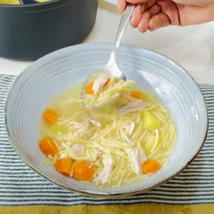

Para 8 raciones
- 2.5 litros de agua
- 1 muslo de pollo
- 2 alitas de pollo
- 1 carcasa de pollo
- 2 puerros
- 2 zanahorias
- 1 rama de apio
- 2 dientes de ajo
- 1 cebolla
- 1 patata
- Sal
- 40 gr de fideos por persona
Cómo hacer Sopa de pollo. Receta fácil y rápida
- 1.- Prepara las verduras: pela la zanahoria y las cebollas, pela también la patata y el ajo déjalo entero. Pon las verduras en un escurridor y déjalas un rato bajo el grifo, prestando especial atención al puerro, pues puede tener algo de tierra entre las capas. Llena una olla con 2´5 litros de agua. Enciende el fuego e introduce el muslo de pollo, la carcasa y las alitas, el puerro, el apio, la cebolla, la patata, la zanahoria y el ajo. Échale sal al gusto.
- 2.- Deja cocer a fuego lento 1 hora y media con la tapa entreabierta.
- 3.- Cuando salga espuma, retírala con una espumadera.
- 4.- Cuela el caldo para quitar impurezas y ya lo tienes listo para usar. Si lo quieres desgrasar, enfríalo en la nevera y retira la capa sólida de grasa.
- 5.- Para la sopa de pollo: calienta el caldo y añade 40 gramos de fideos por persona. 
- 6.- Deja cocer 5 minutos y sirve en plato hondo. Puedes añadir el pollo desmigado y trocitos de verduras.

Mis consejos para elaborar esta Sopa de Pollo:
- – Las cantidades de los ingredientes son referenciales. Puedes quitar o añadir ingredientes al gusto o modificar las cantidades de cada uno. A mí, por ejemplo, me gusta mucho añadir una punta de jamón.
- – El caldo o la sopa duran de tres a cuatro días en la nevera. Si lo vas a congelar el caldo, lo mejor es que lo hagas en recipientes que no sean demasiado grandes, de medio litro o de un litro.
- – Es preferible que dejes el caldo más bien soso, así podrás rectificarlo de sal justo antes de servir. Si le quieres añadir jamón, ya sabes que sazona mucho, así que ten cuidado con la sal que añades.
- – Si te sobra caldo de pollo puedes usarlo para preparar arroces y risottos que ya verás qué sabor más rico les da.